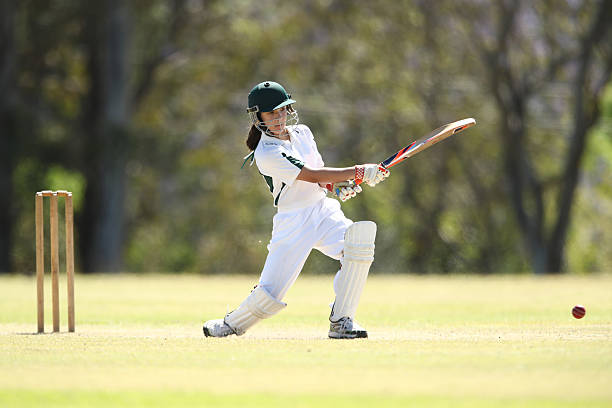

Premium Cricket Equipment

CricStars was founded with a single mission: to equip cricketers at every level with professional-grade gear. Born from a passion for the gentleman's game, our curated collection bridges the gap between grassroots cricket and the international arena.
Whether you are stepping onto the pitch for your first club match or walking out at Lord's, our commitment to quality, craftsmanship, and performance ensures that you can focus entirely on your game. We source directly from the world's finest manufacturers of English and Kashmir willow, premium leather, and cutting-edge protective materials.